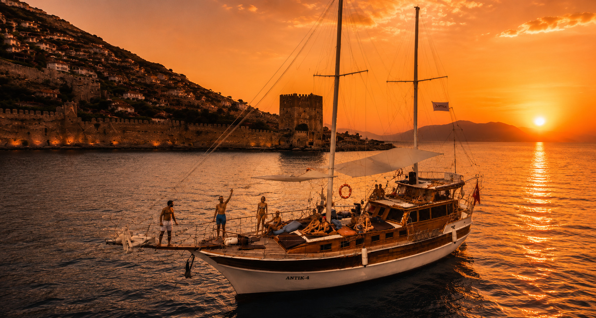
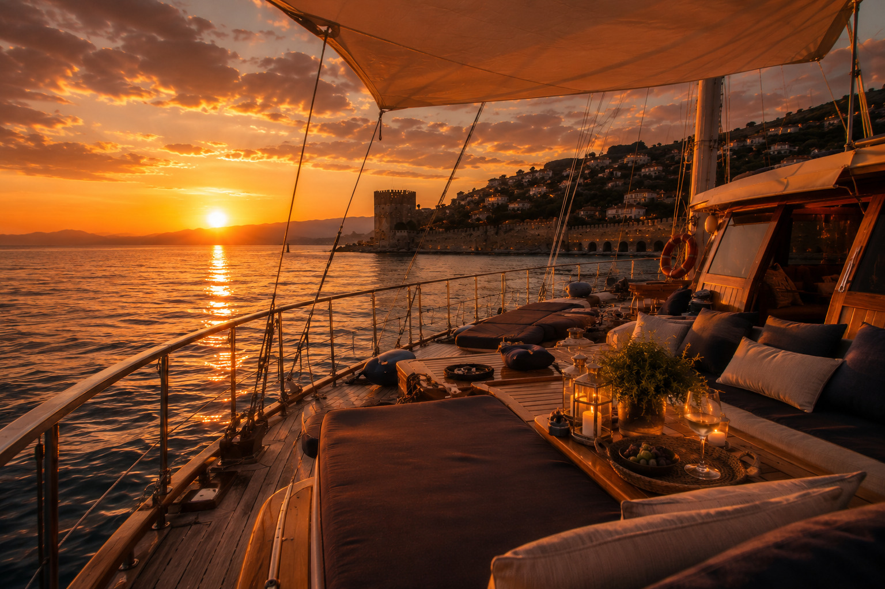

PHOTO GALLERY
A Different Way To Feel Alanya



A peaceful Mediterranean boat experience in Alanya with hidden bays, calm atmosphere, crystal clear water and unforgettable sunset views.
Relax Boat Tour is a completely different format of sea experience in Alanya. No loud party atmosphere, no crowded tourist boats and no aggressive animation.
This experience is built around calmness, privacy and real Mediterranean relaxation. The boat usually hosts only a small number of guests, creating a peaceful and comfortable atmosphere during the entire trip.
The route includes hidden bays and quiet swimming locations where large pirate yachts and standard excursion boats usually do not go.
During the trip you can swim in crystal clear water, relax under the sunset, sunbathe on deck or simply enjoy the atmosphere of the sea in silence.


Relax Boat Tour is designed for guests who want a slower, quieter and more aesthetic way to enjoy the Mediterranean Sea. This is not a party cruise — this is a peaceful escape with beautiful views, calm bays and sunset atmosphere.
Contact us on WhatsApp and we will help you choose the best day, pickup point and all tour details.
BOOK ON WHATSAPP